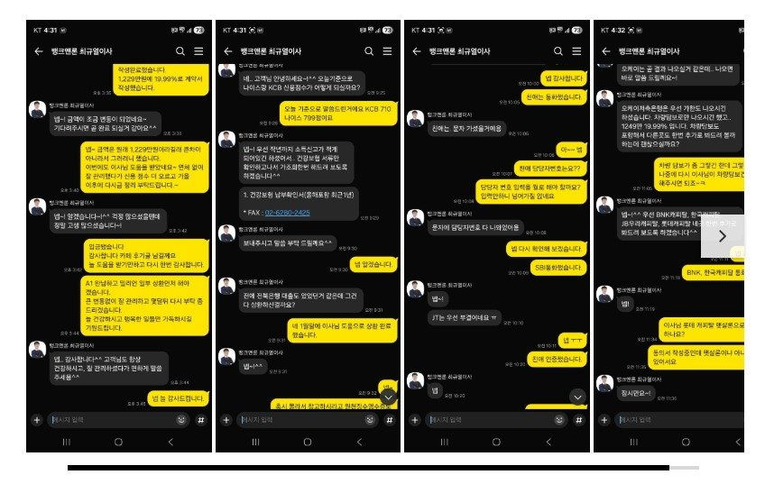

[회생면책자대출] 최규열이사님 항상 감사합니다.

재직형태 : 직장인
재직기간 : 22년 7월부터~
사대보험 : 가입 유
소 득 : 연 4120만
신용상태 : 25년 12월 개인회생 면책 후 현재 금일 기준 KCB 710 / 나이스 799
채무내역 : 저축은행 햇살론 1건 / 저축은행 1건 / 대부 2건
필요서류 : 건강보험 납부확인서, 전자계약
25년 12월 개인회생 면책 후 01월 신정원 도착 직후 바로 최규열 이사님 도움으로 총 5건이었던 대출을
4건으로 줄여주셨었었고 2~3달후에 다시 대환 진행해주신다는 말씀이 있었습니다.
그렇게 3월에 들어서자 마자 급하게 돈이 또 필요한지라 기대출 4건중에 1건이라도
줄이고 여유돈 좀 만들생각에 최규열이사님께 도움의 청하고 1월달 도움 받은 이후 너무 짧은 시간이라
큰 기대 없이 건보 납부 확인서 팩스 전송후 여기저기 몇곳 가조회 진행 해주셨고 마음 비우고 기다림의 시간.....
그렇게 얼마간의 시간이 흐르던중 몇곳은 부결이었고 그중에 저축은행 한곳에서 차량담보로 가승인 1,229만원
차량이 16년식에 16만킬로라 큰 기대도 없었는데 모바일 계약서 작성하고 최종 승인 입금까지 받았습니다.
그렇게 받은걸로 대부 1건 완납하고 또 하나의 대부 1건은 일부 상환하고 200여만원 여유돈으로 만들수 있었네요~
물론 조건이 되어야 하는거겠지만 제 입장에서는 뱅크앤론은 늘 받기만 하는 선물같은 곳입니다.
뱅크앤론은 선물 같지만 최규열이사님은 그 선물을 전해주시는 산타 같은 분입니다.
회생 끝내고 아직 정상 신용도 아닌데 번번히 도움 주셔서 감사합니다.
정신차리고 관리 잘해서 오늘 받은 차량담보대출건도 가을 이후에 최규열이사님께 대환 부탁드리겠습니다.
다시 한번 감사드리고 늘 건강하시고 행복한 일들만 가득하세요~
https://cafe.naver.com/cityman88/310322